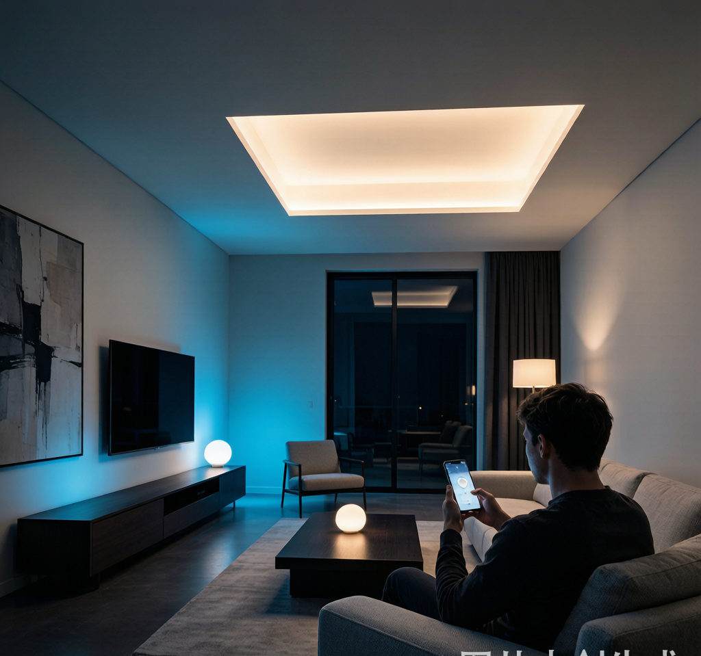
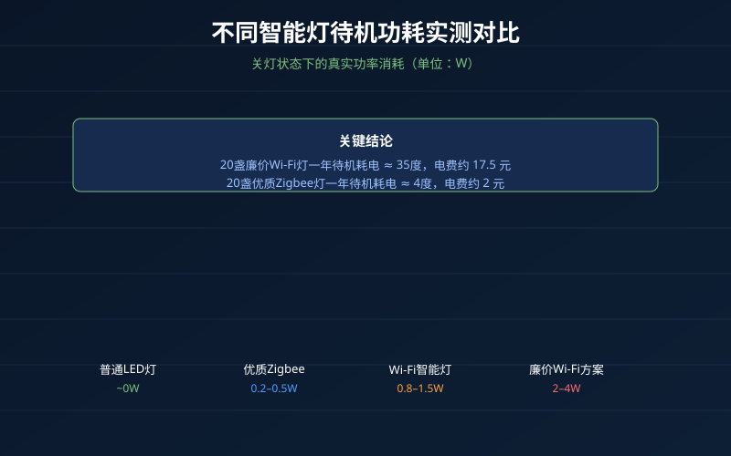
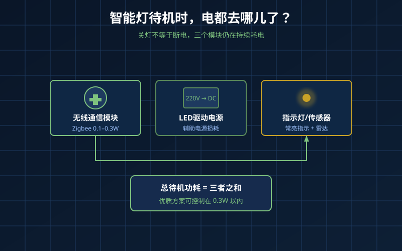
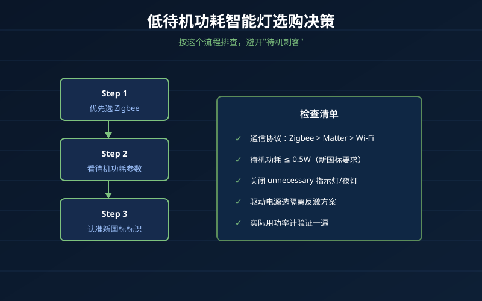

灯关了，电还在跑
装修完一算电费，很多人懵了：
"全屋智能灯，白天基本不开，一个月怎么还多出二三十度电？"
这不是错觉。智能灯和传统的机械开关灯不同——关灯后，它并没有完全断电。无线模块要待命、驱动电源要保持待机、有些还要给传感器持续供电。
问题不是"智能灯都耗电"，而是不同灯的待机功耗差距大得离谱。我们拿市面上的常见方案测了一圈，结果让人意外。
实测：待机功耗差距能到20倍
用功率计测了几类典型产品（220V，关灯状态）：
| 类型 | 待机功耗 | 一年待机耗电 | 20盏灯一年电费 |
|---|---|---|---|
| 普通LED吸顶灯（非智能） | 0W | 0度 | 0元 |
| 优质Zigbee智能灯 | 0.2W–0.5W | 1.8–4.4度 | 约4–10元 |
| 普通Wi-Fi智能灯泡 | 0.8W–1.5W | 7–13度 | 约16–30元 |
| 老旧/廉价Wi-Fi驱动方案 | 2W–4W | 17.5–35度 | 约40–80元 |
| 带待机指示/恒热的智能面板灯 | 3W–5W | 26–44度 | 约60–105元 |
按居民电价0.5元/度算，20盏灯一年待机电费从0元到100元不等。看起来不多，但如果你家有五六十个智能点位，加上弱电箱里的网关、摄像头、智能音箱，待机负荷会叠加成一笔可观的开销。
更关键的是：待机功耗高的灯，往往驱动电源设计也差，发热、寿命、频闪问题通常也一并存在。

待机功耗从哪来？
一盏智能灯关灯后，电主要去了三个地方：
1. 无线通信模块
Zigbee模块待机功耗通常在0.1W–0.3W，Wi-Fi模块则在0.5W–1.5W之间。这也是为什么同样亮度下，Wi-Fi灯泡普遍比Zigbee灯泡更费电。
2. 驱动电源的辅助电源
驱动电源要把220V变成稳定的低压直流，这个变换电路本身就有损耗。低成本的非隔离方案、老旧的RCC自激振荡方案，待机损耗普遍偏高。
3. 指示灯、传感器、继电器保持
有些智能面板灯为了"好看"，关灯后还亮着一圈微光指示灯；有些带雷达感应的灯，传感器24小时通电；还有一些用继电器控制的方案，线圈保持本身就要耗电。
最隐蔽的"偷电"设计，是驱动电源为了兼容可控硅调光，在关灯后仍然让可控硅维持微导通。 这种设计会让灯具在关闭状态下仍有0.5W–2W的功耗，并且容易让灯出现"鬼火"微亮现象。

一个小实验：你家的灯关干净了吗？
用手机摄像头靠近关灯后的智能灯（别开夜景模式），如果屏幕里能看到规律的闪烁微光，说明驱动电源还在高频工作。再摸一下灯体温度：如果关灯半小时后还温热，那待机功耗大概率不低。
更准的办法是买一个十几块钱的功率计，把智能灯单独插上测一下。很多用户测完才发现，家里待机耗电最高的不是冰箱，而是几个便宜Wi-Fi吸顶灯。
2026年选购建议：怎么避免"待机刺客"
1. 优先选Zigbee/Matter方案，谨慎选Wi-Fi直连
同样功能下，Zigbee待机功耗通常是Wi-Fi的1/5到1/10。Matter over Thread方案功耗也控制得不错。如果你家有二三十个灯，全用Wi-Fi直连，路由器压力大、电费也高。
2. 看驱动电源的能效标识
2025年新国标GB/T 31831-2025实施后，智能灯具的待机功耗有了明确要求。优先选择标注符合新国标、待机功耗≤0.5W的产品。
3. 谨慎对待"多功能"灯具
带彩色待机指示灯、24小时雷达感应、内置小夜灯常亮的灯，功能越多待机越难低。如果不需要这些功能，尽量关掉或避免购买。
4. 智能开关+普通灯，比智能灯更省电
如果只是想要定时开关、语音控制，智能开关配优质普通LED灯是待机功耗最低的组合。普通LED灯关灯后真正断电，待机耗电只在开关那一端，通常小于0.3W。
5. 网关和路由也要算进去
很多人算待机只算灯，忘了网关、智能音箱、Mesh路由器。一个Zigbee网关待机5W–10W，24小时运行一年就是44–88度电。布局时尽量集中，减少重复网关。

NEXLAMP的方案思路
我们在做NEXLAMP智能驱动时，把待机功耗作为核心指标之一：
- Zigbee方案：采用低功耗休眠+快速唤醒，待机功耗控制在0.3W以内
- 驱动架构：隔离反激方案替代非隔离/可控硅方案，降低待机损耗和发热
- 去指示灯设计：默认关闭待机指示灯，避免"为了好看而偷电"
- 兼容新国标：全系列满足GB/T 31831-2025对待机功耗和谐波的要求
全屋智能的电费账，不该花在"关灯后的偷偷运行"上。
总结
智能灯待机耗电不是伪问题，但也不是所有智能灯都耗电。关键看三点：通信协议、驱动电源架构、有没有多余的常亮模块。装修前多看看参数表里的"待机功耗"一栏，能帮你避开未来几年的隐形电费坑。
如果你已经装完了，花半小时拿功率计测一遍全屋智能灯，大概率能找出几个"电老鼠"。